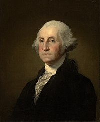

Amerika Qoʻshma Shtatlari (AQSH; inglizcha: United States of America, USA), Qoʻshma Shtatlar (inglizcha: United
States) yoki shunchaki Amerika (inglizcha: America) Shimoliy Amerikada joylashgan davlat. Poytaxti – Vashington
shahri, Birlashgan Millatlar Tashkiloti aʼzosi. Amerika Qoʻshma Shtatlari sharqdan Atlantika, gʻarbdan Tinch
okeani, janubi-sharqdan Meksika qoʻltigʻi bilan oʻralgan. Maʼmuriy jihatdan 50 shtat va bir federal okrugga
boʻlinadi. Alyaska va Gavayi shtatlari mamlakat asosiy hududidan tashqarida joylashgan. Puerto-Riko
Hamdoʻstligi, Shimoliy Mariana orollari Hamdoʻstligi, Guam, Virginiya orollari va Amerika Samoasi ham Amerika
Qoʻshma Shtatlariga qarashli. Maydoni – jami 9 833 520 km2. Aholisi 347 million kishi (2024) dan oshiq boʻlib,
aholi soni boʻyicha jahonda uchinchi oʻrinda turadi.
Bugun dunyoning qariyb barcha davlatlarida konstitutsiya asosiy qonun hisoblanadi va boshqa har qanday
chiqariladigan qonun, qaror hamda farmonlar unga muvofiq tarzda qabul qilinadi. Shu tufayli konstitutsiya «Bosh
qomus», «Asosiy qonun» deb ham ataladi.
Konstitutsiya so‘zi lotincha constitutio - «qurmoq», «tashkil etmoq» so‘zlaridan olingan. Konstitutsiyaning
tarixi qadimgi grek davlatlari va Rim imperiyasiga borib taqaladi.
O‘rta asrlarda qabul qilingan konstitutsiyalar orasida 1529 yilda qabul qilingan Litva knyazligi konstitutsiyasi
eng qadimiysi hisoblanadi.
Bugungi kundayam amalda bo‘lgan qadimiy konstitutsiyalar orasida AQSh konstitutsiyasi ham bor. U 1787 yil 17
sentyabrda Filadelfiyada qabul qilingan. AQSh konstitutsiyasini dastlab bu davlatni tuzgan 13ta shtat
ratifikatsiya qilgan va u kuchga kirgan. AQSh konstitutsiyasi dunyodagi eng qat'iy amal qilinadigan
konstitutsiyalar sirasiga kiradi.
Turli davlatlarning konstitutsiyalariga davrlar o‘tishi bilan qandaydir o‘zgartirishlarga ehtiyoj tug‘iladi. Shu
jumladan, AQSh konstitutsiyasiga ham jami 27 marta o‘zgartirish kiritilgan.
Xabaringiz bor, joriy yil 1 iyulda Rossiyada konstitutsiyaga o‘zgartirishlar kiritish haqida referendum bo‘lib
o‘tdi. Unda ovoz berganlarning qariyb 80 foizi mamlakat konstitutsiyasini o‘zgartirish uchun «ha» deb javob
bergan. Qizig‘i shundaki, Rossiya konstitutsiyasi bir shaxs, amaldagi prezident yanada uzoqroq vaqt boshqaruvda
qolishi uchun imkoniyat beradigan qilib o‘zgartirildi. AQSh konstitutsiyasida esa 27 marta qilingan
o‘zgartirishlarning aksariyatida omma manfatlari nazarda tutib amalga oshirilgan.
Shuningdek, AQSh konstitutsiyasiga kiritiladigan o‘zgartirishlar uchun referendum o‘tkazilmaydi. Ular kuchga
kirishi uchun uni barcha shtatlar ratifikatsiya qilishi yetarli bo‘ladi.
AQSh konstitutsiyaga dastlabki o‘nta o‘zgartirish 1789 yil 25 sentyabrda amalga oshirilgan va ular 1791 yil 15
dekabrda kuchga kirgan. Quyida AQSh konstitutsiyasidagi o‘zgartirishlar tarixiga nazar tashlaymiz.

Jorj Vashington (22-fevral, 1732[1] - 14-dekabr, 1799) Amerika Qoʻshma Shtatlarining birinchi prezidenti,
Amerika Mustaqilligi Urushida Qitʼa Armiyasi bosh qoʻmondoni boʻlgan. Amerikadagi mustaqillik uchun urush
paytida (1775-83) kolonistlar armiyasining bosh qoʻmondoni (bu armiya ingliz mustamlakachiligiga barham berib,
uning jangovar harakatlari AK.III mustaqilligining eʼlon kilinishiga olib keldi). Amerika Qo'shma SHtatlari
Konstitutsiyasini ishlab chiqish boʻyicha Konvent raisi (1787). V. Yevropa davlatlari oʻrtasidagi raqobatchilik
munosabatlarida Amerika Qo'shma SHtatlarining betarafligini saqlashga harakat qilgan. Nomzodini 3-marta
prezidentlikka qoʻyishdan bosh tortgan